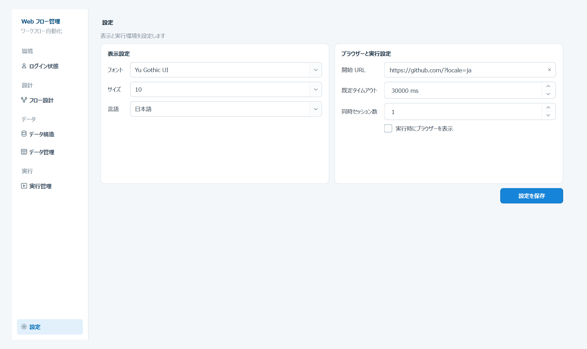

表示、ブラウザー、実行時の共通設定をまとめて管理します。

| 項目 | 操作内容 |
|---|---|
| フォント | アプリ画面で使用するフォントを変更します。 |
| サイズ | 画面全体の文字サイズを変更します。 |
| 言語 | 日本語または中国語を選択します。 |
| 項目 | 操作内容 | 注意 |
|---|---|---|
| 開始 URL | 要素選択用ブラウザーと認証ブラウザーの初期ページを設定します。 | http:// または https:// で始めます。 |
| 既定タイムアウト | 新規イベントに設定する初期タイムアウトをミリ秒で指定します。 | 1～3600000 の整数を指定します。 |
| 同時セッション数 | 異なる実行グループを同時に処理する上限を指定します。 | 端末と対象サイトの負荷を考慮します。 |
| 実行時にブラウザーを表示 | 通常実行の Chrome を表示／非表示にします。 | 非表示でも処理はバックグラウンドで継続します。 |
| 設定を保存 | 表示・ブラウザー・実行設定をまとめて保存します。 | 入力後に必ず押します。 |